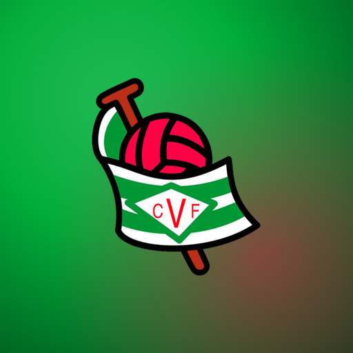
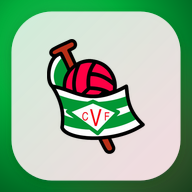
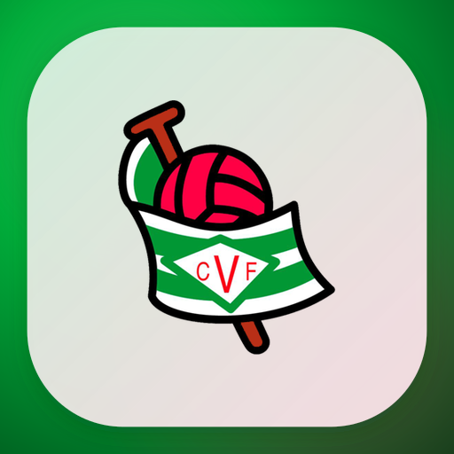
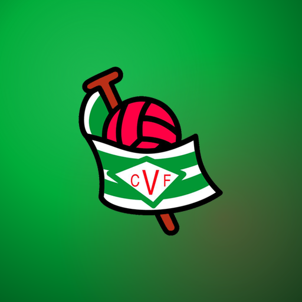

Ambient-gradient PWA install icon — variant gallery
Test asset: vimenor (CF Vimenor shield). Palette extracted from the logo
pixels, same method family as
apps/app/components/layouts/team-branding.tsx (dominant colors →
boostSaturation → layered radial gradients), ported to Node + sharp for static PNG export.
Checkerboard = transparency in the source frame (not present in final opaque PNGs, shown
only where relevant).
A — Tight padding, soft ambient
Logo fills most of the canvas; the ambient glow is a quiet backdrop, not a focal point.
A-180.pngA-192.pngA-512.pngA-512-maskable.pngB — Larger logo, stronger gradient
Logo pushed almost edge to edge; the ambient glow is saturated and layered for a punchier home-screen presence.
B-180.pngB-192.pngB-512.png
B-512-maskable.pngC — Opaque plate, ambient behind
A rounded, opaque plate sits on top of the ambient glow (visible in the margin) and holds the logo — classic app-icon sticker feel.
C-180.png
C-192.pngC-512.png
C-512-maskable.pngD — Maskable-safe zone
Logo deliberately confined to the ~80% safe-zone circle so Android's circle/squircle/rounded-square masks never clip it.
D-180.pngD-192.pngD-512.png
D-512-maskable.png